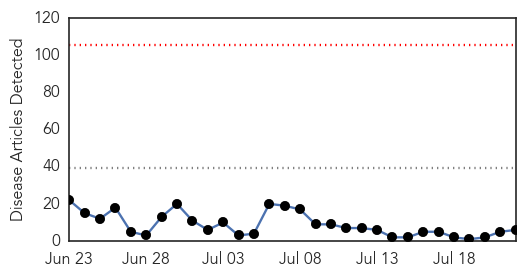
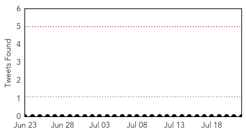
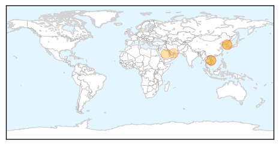
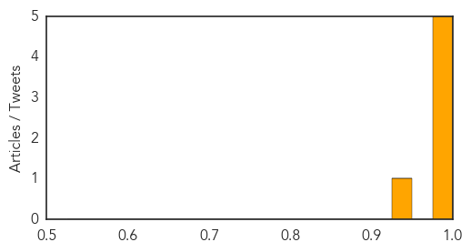
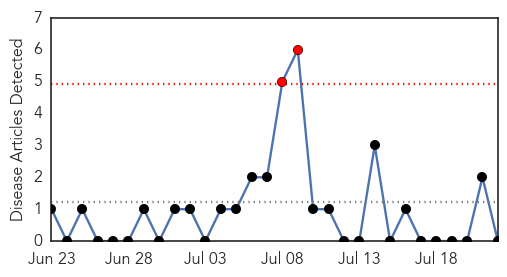
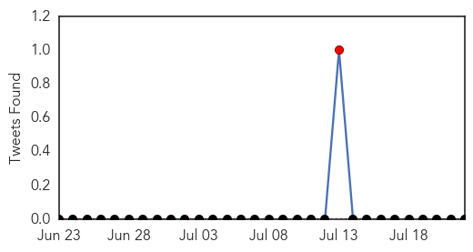

MERS
30-Day Web Trend
0 alerts, 0 warnings

30-Day Twitter Trend
0 alerts, 0 warnings

Article Locations
Article Confidences
Top Articles:
- 0.999
- NPHL rules out MERS suspicion
- 0.998
- South Koreans avoid hospitals as government quiet on MERS
- 0.998
- Russian tourists staying away from South Korea despite end of deadly virus outbreak
- 0.991
- MOPH: Rayong flu patient negative for MERS-CoV
- 0.988
- Suspected patient only has seasonal flu: doctors
- 0.931
- HCM City issues plan against looming MERS spread
Top Tweets:
-
No tweets found for Jul 22, 2015
Chikungunya
30-Day Web Trend
2 alerts, 0 warnings

30-Day Twitter Trend
1 alerts, 0 warnings

Article Locations

Article Confidences

Top Articles:
-
No articles found for Jul 22, 2015
Top Tweets:
-
No tweets found for Jul 22, 2015